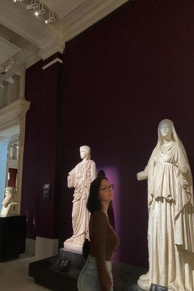

Merhaba, Ben Hale! Küçüklüğümden beri astronomi ve teknolojiye olan ilgim hiç bitmedi. Gökyüzüne bakarken yıldızların ve gezegenlerin ardındaki sırları keşfetme isteğim hep vardı. 🌌 Yıldızlar, gezegenler, uzaydaki derinlikler... Bunlar bana her zaman büyülü gelmiştir. Zamanla, bu ilgim beni astronomiye yönlendirdi ve gökyüzünü daha fazla keşfetmeye başladım. Her yeni bilgiyle, evrenin ne kadar devasa ve keşfedilmeye değer olduğunu daha çok fark ettim. Teknolojiyle tanışmam da bir o kadar heyecan vericiydi. Çocukken katıldığım robotik kursları, teknolojiye olan ilgimi pekiştirdi. 🤖 İlk robotumu yaparken yaşadığım zorluklar ve başarılar, beni problem çözme konusunda geliştirip, yazılım ve mühendislik alanlarına olan ilgimi artırdı. Teknoloji, bir anlamda yaşamımı şekillendiren bir tutkuya dönüştü.
Şu anda, yazılım geliştirme ve teknoloji üzerine daha fazla bilgi edinmeye devam ediyorum. Bu konuda öğrendiklerimi başkalarıyla paylaşmayı seviyorum. Her yeni yazılım dili, her yeni teknoloji, beni daha da heyecanlandırıyor. Teknolojinin her geçen gün hayatımıza entegre olmasıyla, daha fazla öğrenmek ve bu dünyaya katkı sağlamak istiyorum. 💻 Beni tanıyanlar, genellikle meraklı ve araştırmayı seven biri olduğumu söylerler. Herhangi bir konuda derinlemesine bilgi edinmek, yeni şeyler öğrenmek benim için bir tutku. 📚 Ve öğrendiklerimi başkalarına aktararak, onların da faydalanmasını sağlamak gerçekten beni mutlu ediyor. Teknoloji ve astronomiye olan ilgim hiç bitmeyecek. Her zaman daha fazla öğrenmek, yeni şeyler keşfetmek istiyorum.
Ben Kimim?
